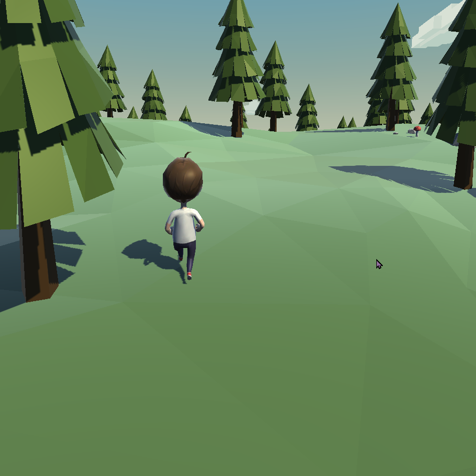

See some of my
Projects
I’ve highlighted a few projects here but you can see more of my work on my github and itch.io pages
All of the projects below were made entirely by myself other than Conventional Vampires where I was the programmer and project lead



Curved World
Animal Corssing case study. Recreating their world curving shader and camera controller
Tilemap Pathfinding
Pathfinding implementation that makes use of the existing tilemap system in Unity